Kế hoạch thiết kế & triển khai · 21/10/2026
Bảy màn hình mẫu đã dựng chạy được ở 390×844, kèm lớp CSS thả vào là dùng. Tài liệu này chốt kiến trúc, mô hình điều hướng, đặc tả thành phần và lộ trình 5 đợt — dựa trên số đo từ chính ứng dụng đang chạy, không phải phỏng đoán.
Tôi chụp lại 6 trang mẫu ở 390×844 ngay hôm nay, trên DB SQLite dùng một lần, sau khi palette Chàm Đông đã áp xong. Ảnh dưới là trạng thái thật, không phải bản mô phỏng.
Topbar hai hàng (44px + 44px) + breadcrumb 34px + viền ≈ 170px trước nội dung đầu tiên. Ô tìm kiếm luôn mở chiếm trọn một hàng, trong khi tìm kiếm chỉ là thao tác thứ yếu trên điện thoại.
Nút tròn 44px ở góc dưới phải che ô "Giới tính" trong biểu mẫu và che chữ trong trạng thái rỗng. Nó cũng trùng chức năng với ô tìm kiếm trên topbar — hai lối vào cho một việc.
Nút primary "Thêm nhân viên" + thẻ lọc (ô trống + nút "Áp dụng" rộng hết hàng) chiếm ~300px trước dữ liệu. Trạng thái rỗng còn lặp hai lần: "Có 0 nhân viên phù hợp" rồi "Chưa có nhân viên trong phạm vi".
Ở 390px chỉ thấy cột "Phòng ban" và một phần cột số. Ghi chú "Bảng có thể cuộn ngang" có trong trang nhưng không có chỉ báo cuộn, không có cột dính — người dùng không biết còn dữ liệu bên phải.
Mỗi thẻ cao ~215px để hiển thị "1", "0", "0", "0". Tổng ~450px, đẩy "Công việc của tôi" xuống y≈750 — gần như dưới đáy màn hình. Việc cần làm thật nằm ngoài tầm nhìn đầu tiên.
Mọi chuyển màn hình đều qua nút hamburger ở góc trên trái — vùng khó với tới nhất khi cầm một tay. 12+ phân hệ nằm sau một drawer, không có lối tắt nào cho 3 việc dùng nhiều nhất.
Biểu mẫu đã về một cột (đúng), nhưng ô ngày hiển thị theo locale en-US và chỉ rộng ~150px. Thiếu inputmode/autocomplete nên bàn phím không tối ưu cho số CCCD, điện thoại.
manifest.json và service-worker.js đã có, cài được lên màn hình chính. Nhưng không có app bar riêng, không có tab bar, không có trạng thái ngoại tuyến — mở ra vẫn là trang web thu nhỏ.
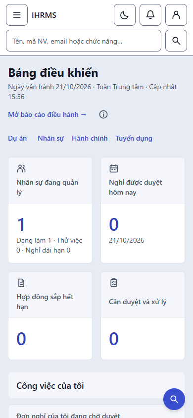
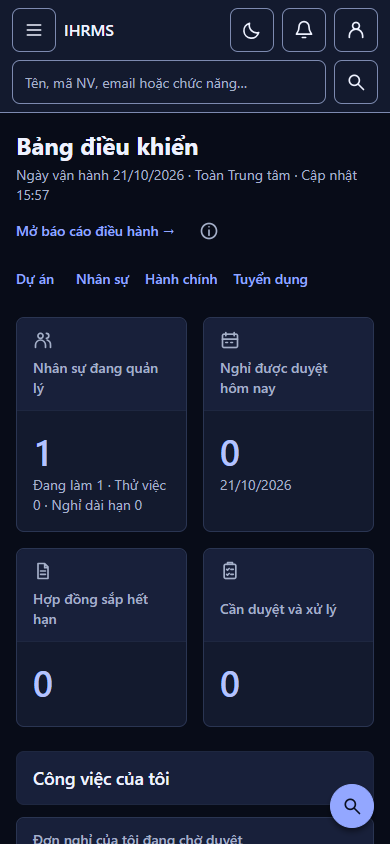
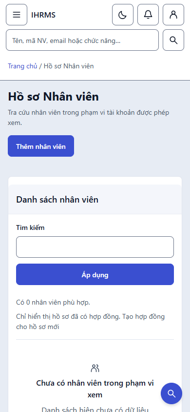
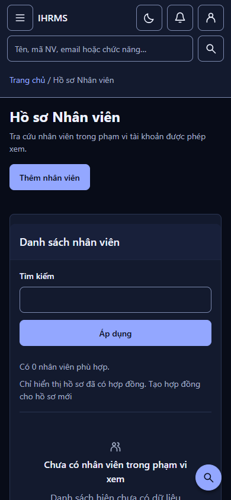
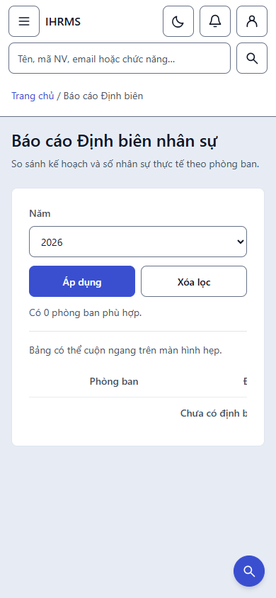
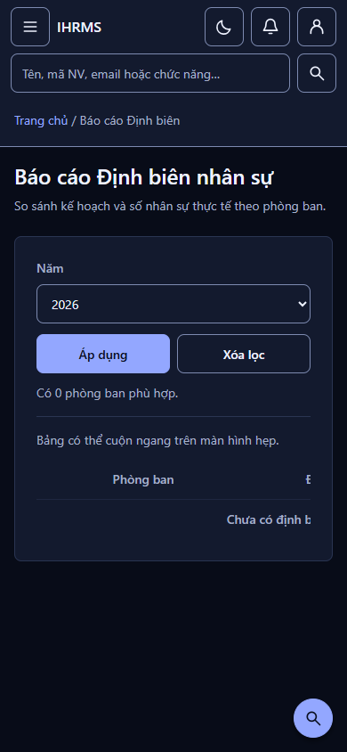
Backend hiện tại là Django 5.2 thuần template, không có DRF hay tầng API nào. Đây là dữ kiện quyết định: một app native phải dựng thêm API cho ~15 phân hệ, nhân bản toàn bộ ma trận phân quyền, rồi bảo trì hai nguồn sự thật. PWA thì dùng lại đúng những gì đã có.
| Tiêu chí | PWA mobile-first (đề xuất) | Native (React Native / Flutter) |
|---|---|---|
| Backend | Dùng lại Django, không cần API mới | Phải dựng DRF + token auth cho ~15 domain |
| Phân quyền | Dùng lại can_* trong context processor | Nhân bản toàn bộ ma trận quyền, dễ lệch |
| Bản in HCNS | Không ảnh hưởng (CSS mobile nằm trong @media screen) | Không liên quan |
| Ngoại tuyến | Service worker + hàng đợi thao tác; đủ cho nghỉ phép/chấm công | Tốt hơn, nhưng phải tự viết đồng bộ xung đột |
| Push | Web Push; iOS chỉ hỗ trợ khi đã cài lên màn hình chính | Push đầy đủ |
| Phân phối | Mở link, cài trong 2 bước; cập nhật tức thì | App Store / Play Store, chờ duyệt từng bản |
| Chi phí | 5 đợt, một nguồn mã | 4–6 tháng, hai nền tảng, hai bộ kiểm thử |
Khuyến nghị: chốt PWA là "app di động chính thức" trong 6 tháng tới. Chỉ mở tầng API khi có yêu cầu cụ thể mà web không làm được — chấm công GPS nền, push iOS ổn định, hoặc chế độ ngoại tuyến nhiều ngày. Khi đó API được thêm sau lớp vỏ này, không phải viết lại giao diện.
@media screen and (max-width:1023px) và một layer riêng ihrms.mobile.mobile_shell.css không có khối @media print, không ghi đè print_forms.css.--ui-* sẵn có.settings.MOBILE_SHELL, mặc định bật, tắt là về giao diện cũ ngay.Theo quyết định 21/10, thanh đáy có 5 tab gồm "Tôi". 12+ phân hệ vẫn không nhét hết vào tab bar được, nên tab 4 là cửa "Thêm" mở danh sách mô-đun theo quyền. Tab 2 và tab 3 đổi theo vai trò: người duyệt thấy "Cần duyệt" và "Nhân sự", nhân viên thấy "Chấm công" và "Đơn của tôi".
| Tab | Nhân viên | Quản lý / Trưởng phòng | HR & Quản trị |
|---|---|---|---|
| 1. Trang chủ | Việc của tôi hôm nay | Việc chờ duyệt + KPI nhóm | Toàn cảnh + cảnh báo hồ sơ |
| 2. Cần duyệt nhân viên: Chấm công | Chấm công tháng | Hàng đợi duyệt nghỉ phép, ưu tiên quá hạn | Hàng đợi gộp 4 loại |
| 3. Nhân sự nhân viên: Đơn của tôi | Đơn nghỉ phép của tôi | Duyệt chấm công | Hồ sơ, hợp đồng, tuyển dụng |
| 4. Thêm | Mở drawer điều hướng sẵn có — đủ 12+ phân hệ theo can_*, không thêm quyền mới | ||
| 5. Tôi | Hồ sơ, phiếu lương, bảng công, thông báo, đổi mật khẩu, đăng xuất | ||
can_manage_hr / can_approve_timesheet.| Thành phần | Kích thước | Ghi chú |
|---|---|---|
| App bar | 52px | Dính trên, nền mờ, có safe-area |
| Tab bar | 56px + safe-area | Icon 22px, nhãn 11px, badge số |
| Vùng chạm | ≥ 48px | Mọi nút, hàng danh sách, ô nhập |
| Hàng danh sách | 68px | Avatar 40px + 2 dòng chữ |
| Cỡ chữ | 22 / 17 / 15 / 13 / 11 | 5 bậc, không dùng bậc thứ 6 |
| Ô nhập | 48px, chữ 16px | 16px để iOS không tự phóng to |
Đây không phải ảnh mô phỏng. Các màn hình dưới chạy bằng mobile_shell.css thật, nạp trực tiếp ui_tokens.css của dự án, trong viewport 390×844. Bấm vào bản thử tương tác để chuyển tab, mở tấm lọc, duyệt đơn và đổi sáng/tối.
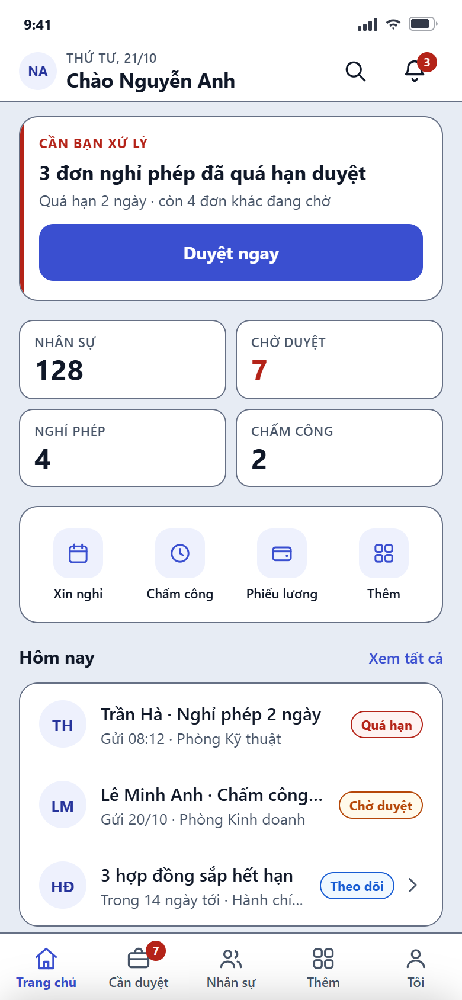
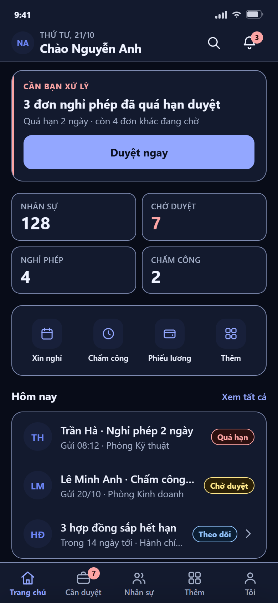
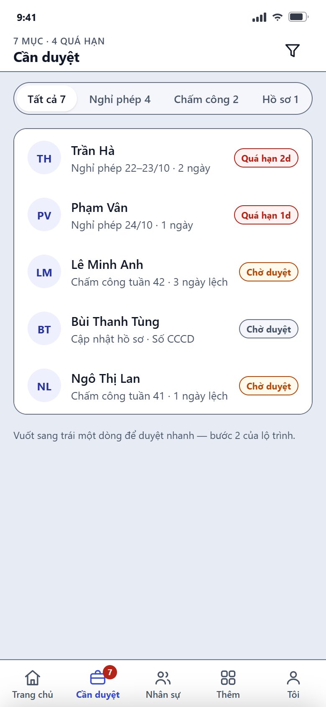
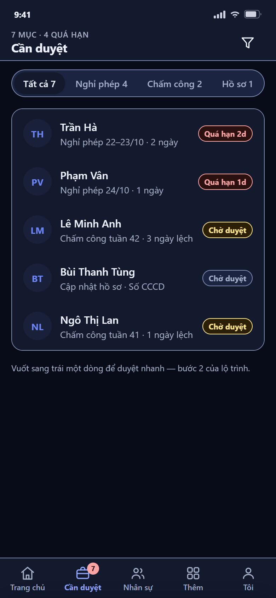
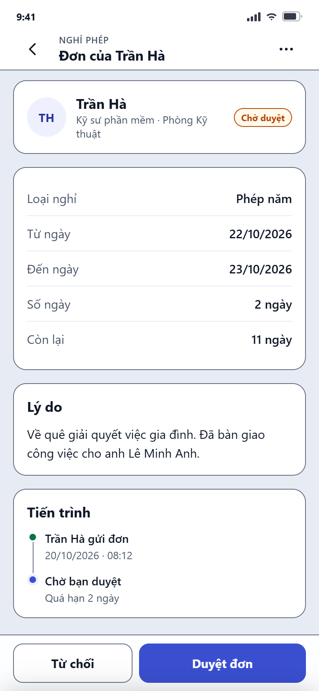
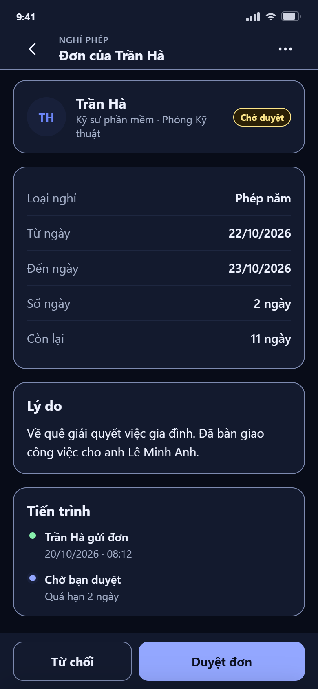
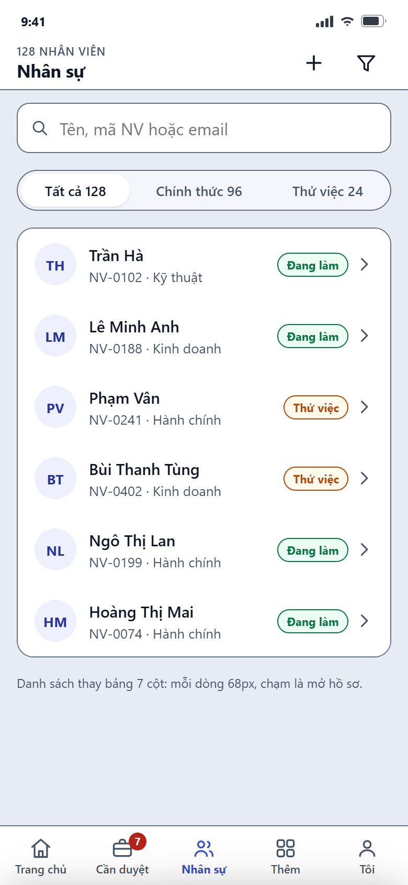
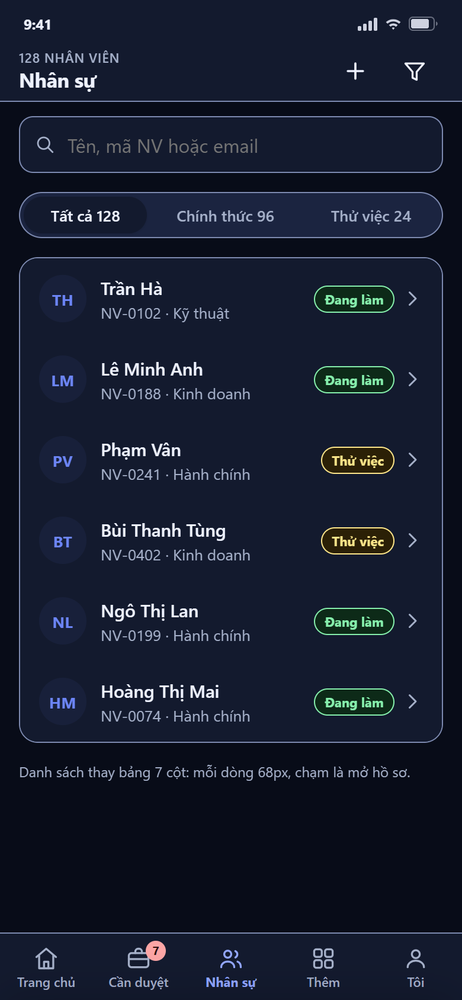
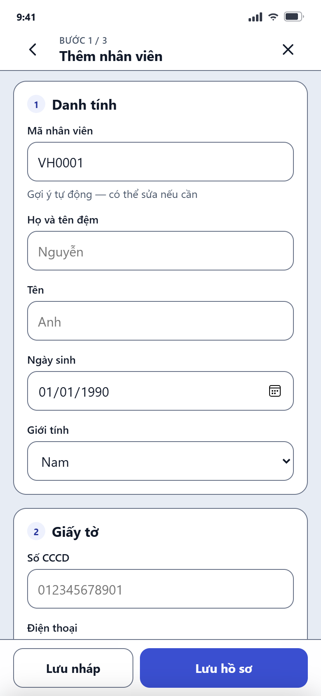
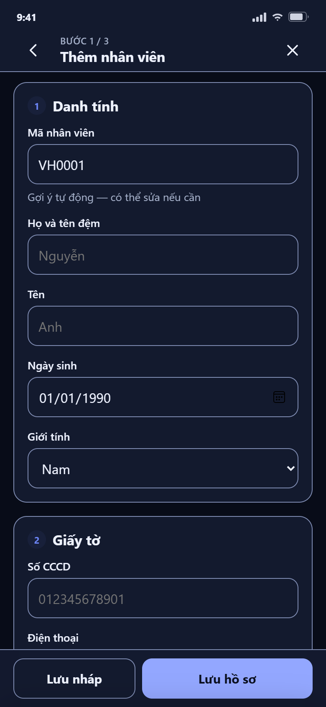
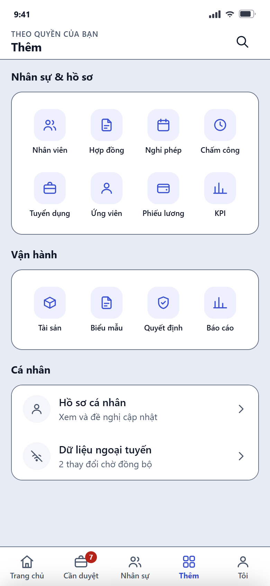
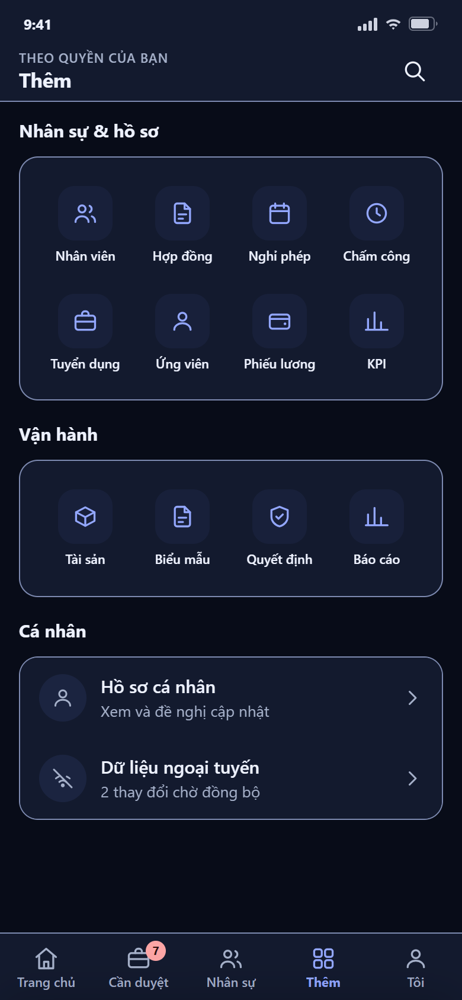
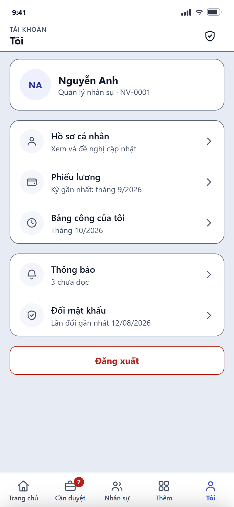
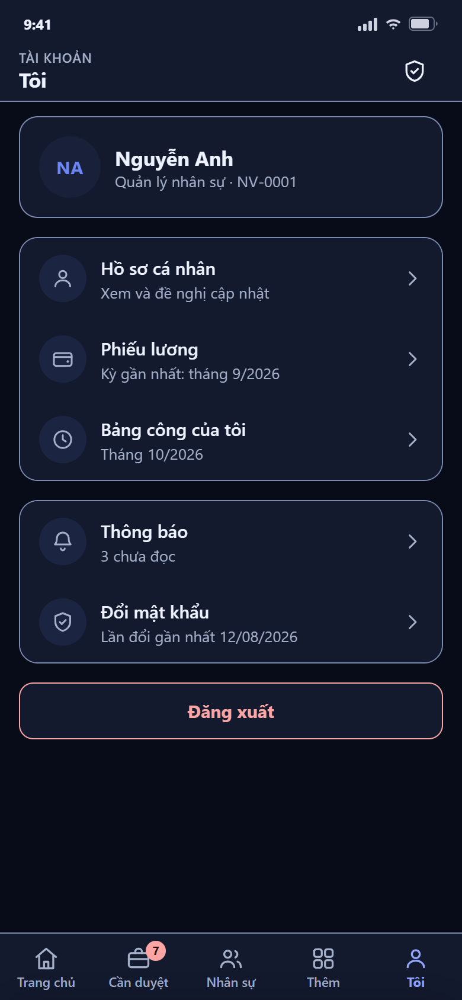
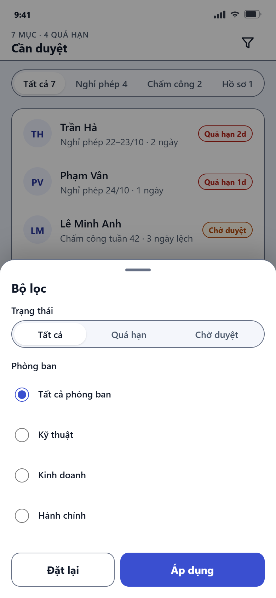
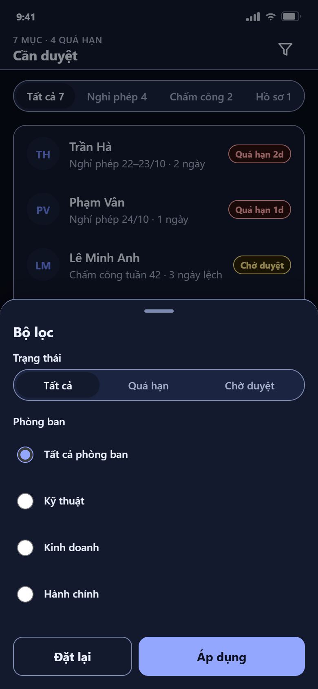
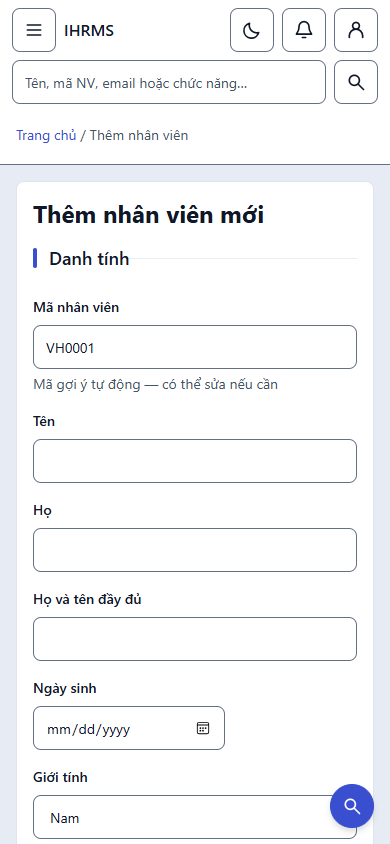
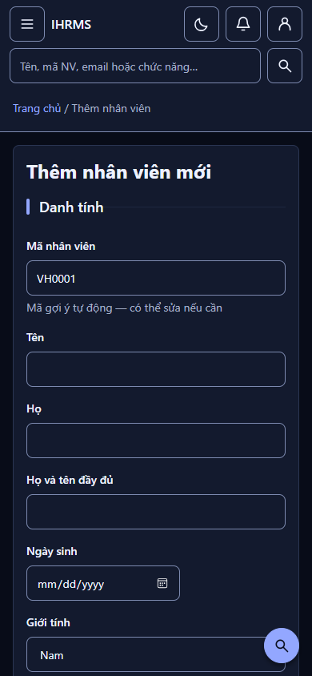
mm/dd/yyyy, nút tìm kiếm nổi che ô "Giới tính".| Lớp | Thay thế | Đặc tả |
|---|---|---|
.ui-appbar | Topbar 2 hàng + breadcrumb | 52px, dính, nền mờ, tiêu đề 17px; biến thể --plain khi không có nút dẫn |
.ui-tabbar | Drawer hamburger | 5 đích, icon 22px, nhãn 11px, badge số, safe-area |
.ui-listrow | <table> 7 cột | 68px, avatar 40px, tiêu đề 15/600, phụ 13px, badge phải |
.ui-chip | Thẻ KPI 215px | Nhãn 11px hoa + số 24px; 2×2, mỗi chip ~72px |
.ui-actionbar | Nút primary giữa trang | Dính đáy, 2 nút, nền mờ, trên tab bar |
.ui-sheet | Thẻ lọc chiếm 300px | Bo 20px trên, tay nắm, trượt 240ms, scrim 42% |
.ui-segmented | Hàng tab tràn ngang | Pill, cuộn ngang, aria-selected |
.ui-mtable | Bảng cuộn không chỉ báo | Cuộn ngang + cột đầu dính + bóng mép |
.ui-modgrid | Drawer nhóm | 4 cột, icon 46px bo 14px |
.ui-mfield | Ô nhập desktop | 48px, chữ 16px, nhãn 13/600, gợi ý 13px |
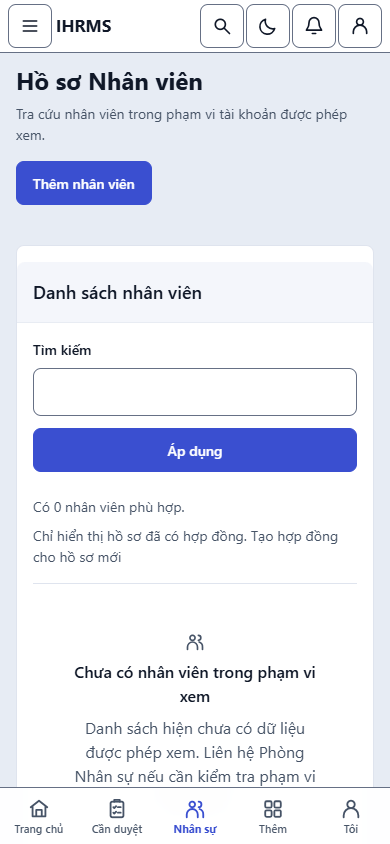
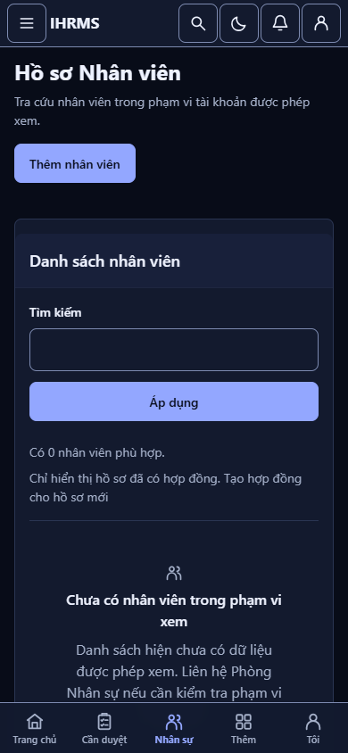
Đã kiểm bằng máy: 12 tổ hợp màn × theme ở 390×844, scrollWidth = 390 ở tất cả — không có tràn ngang. Toàn bộ màu lấy từ token Chàm Đông đã đo AA ở bước trước, không phát sinh màu mới.
Mỗi đợt kết thúc bằng một mốc kiểm được, không phải bằng "đã viết xong CSS". Đợt 1 là đợt duy nhất chạm base.html nên rủi ro cao nhất — làm trước, kiểm kỹ, rồi mới mở rộng.
| Đợt | Nội dung | Tệp chính | Mốc hoàn thành |
|---|---|---|---|
| P0 xong 21/10 |
Đã cài: lớp vỏ, tab bar 5 đích theo quyền, topbar gọn một hàng, ẩn breadcrumb trùng tiêu đề, ẩn FAB trợ lý đè nội dung, bảng cuộn ngang có cột dính, biểu mẫu một cột dưới 640px (máy tính bảng giữ lưới 3 cột của hợp đồng) | mobile_shell.css, ui/mobile_tabbar.html, base.html, _shell_icon.html, app_shell.js |
390/768 không tràn; chrome từ 170px xuống còn ~52px; desktop không đổi |
| P1 1,5 tuần |
Bảng → danh sách thẻ cho 6 route ưu tiên: nhân viên, hợp đồng, nghỉ phép, chấm công, ứng viên, tài sản | 6 template danh sách + partial ui/mobile_list_row.html |
Mỗi danh sách hiện ≥5 dòng trong màn đầu; không còn <table> ở 6 route này dưới 768px |
| P2 1 tuần |
Biểu mẫu & lọc: bộ lọc vào bottom sheet, inputmode/autocomplete, ô ngày lang="vi", lưu dính đáy (ép một cột dưới 640px đã làm ở P0) |
ui_controls.css, 43 template ui-form-grid, partial ui/mobile_filter_sheet.html |
Không ô nhập nào < 48px; không cuộn ngang; nhập số CCCD mở bàn phím số |
| P2.5 1,5 tuần |
Chấm công GPS — chỉ ghi nhận có mặt: một bản ghi/ngày, geofence theo văn phòng, cờ “ngoài vùng”, không tính giờ, không theo dõi nền | Model + migration riêng, view chấm công, template mobile, quyền can_check_in |
Chấm công trong ≤2 thao tác; ngoài vùng vẫn ghi được; không lưu vị trí ngoài thời điểm bấm |
| P3 1 tuần |
Chi tiết & duyệt: thanh hành động dính đáy, duyệt/từ chối tại chỗ, vuốt để duyệt nhanh, cập nhật lạc quan có hoàn tác | 4 template duyệt + mobile_shell.js |
Duyệt một đơn trong ≤3 thao tác, có thông báo và hoàn tác |
| P4 3 ngày |
PWA hoàn thiện: shortcut trong manifest, trang ngoại tuyến, nhắc cập nhật bản mới, hàng đợi thao tác | manifest.json, service-worker.js, offline.html |
Cài lên màn hình chính, mở khi mất mạng vẫn thấy dữ liệu đã tải |
| P5 3 ngày |
Đo & chốt: audit 7 độ rộng, print UAT, browser UAT, chụp baseline mới thay bộ 16/10 | ops/*, docs/screenshots/ |
0 vi phạm ngoài waiver; baseline mới đúng palette Chàm Đông |
Đã làm đúng điều kiện này: P0 sửa base.html — tệp mà cả 196 template kế thừa — nên nó được commit riêng, không gộp với bất kỳ thay đổi nghiệp vụ nào, và chạy đủ các cổng còn áp dụng trước khi commit (print tạm hoãn theo quyết định 05).
Số đo thật: run_layout_alignment_audit.py 150 route / 6.881 ca / 0 vi phạm / 0 lỗi trên 9 tài khoản QA × 7 độ rộng × 2 theme; run_browser_uat.py --layout-only 128 checks, 32 ảnh, 0 lỗi; check_ui_contrast.py 220 cặp, 0 lỗi; apps.portal.tests_mobile 15 test OK (thêm 7 test khoá hợp đồng 5 tab và việc CSS không chạm bản in).
Cổng bắt được lỗi thật: lượt đầu ra 204 vi phạm GRID_COLUMNS ở 768px, vì bản nháp ép biểu mẫu một cột tới 1023px và phá hợp đồng lưới 4/3/2/1 cột. Đã thu hẹp về 639px rồi chạy lại đủ ma trận: 0 vi phạm.
| Rủi ro | Mức | Xử lý |
|---|---|---|
| 12 báo cáo nhiều cột không thể card hoá | Trung bình | Giữ .ui-mtable: cuộn ngang + cột đầu dính + bóng mép; không cố ép thành thẻ |
Sửa base.html ảnh hưởng toàn hệ thống | Cao | Tab bar chỉ render khi đã đăng nhập và CSS nằm trọn trong @media screen and (max-width:1023px); P0 commit riêng, audit đủ 7 độ rộng |
| Bản in HCNS bị lệch | Cao | CSS mới chỉ trong @media screen; test khoá không có khối @media print. Cổng run_print_layout_uat.py tạm hoãn theo quyết định 05, mở lại khi chạm template in |
iOS: 100dvh, safe-area, ô ngày | Trung bình | Dùng env(safe-area-inset-*), viewport-fit=cover, type="date" + lang="vi" |
| Push iOS chưa ổn định | Thấp | Không hứa push trong 6 tháng; thông báo trong app là kênh chính |
| Hai nguồn sự thật nếu sau này làm native | Thấp | Chỉ thêm API khi có yêu cầu cụ thể; lớp vỏ này không chặn API sau |
check_ui_contrast.py — chữ ≥ 4,5:1, UI ≥ 3:1, cả hai theme.run_layout_alignment_audit.py — 1920/1756/1440/1280/1024/768/390, sáng và tối, 0 vi phạm ngoài waiver.run_print_layout_uat.py — tạm hoãn theo quyết định 05. P0 không thêm khối @media print nào (có test khoá điều này), nên bản in không đổi. Mở lại cổng này ngay khi P1/P2 chạm template in hoặc print_forms.css.run_browser_uat.py — luồng nghiệp vụ trên DB dùng một lần, tài khoản QA riêng.Ghi lại nguyên văn để lần sau không phải hỏi lại, kèm hệ quả kỹ thuật của từng quyết định.
PWA là app di động chính thức — ĐÚNGKhông dựng API, không làm native trong 6 tháng. Toàn bộ lực lượng dồn vào lớp vỏ và 6 route ưu tiên. Chỉ mở API khi có yêu cầu cụ thể mà web không làm được.
5 tab, có “Tôi”Tab 2 và 3 đổi theo quyền; tab 4 “Thêm” mở drawer điều hướng sẵn có nên không mất mô-đun nào. Đã cài trong P0.
Đợt 1 làm xong trọn rồi mới kiểm thửKhông bàn giao từng mẩu. P0 + P1 hoàn tất, chạy đủ 4 cổng kiểm thử một lần, rồi mới mở P2. Đổi lại: mỗi lần kiểm thử là một lần chạy đầy đủ 7 độ rộng × 2 theme, không kiểm nửa vời.
Chấm công GPS: chỉ ghi nhận có mặt, chưa tính giờĐây là quyết định thu hẹp phạm vi quan trọng — nó bỏ hẳn phần khó nhất (tính công, ca kíp, làm thêm) và chỉ giữ một câu hỏi: “hôm nay người này có mặt ở văn phòng không?”.
Bản in tạm hoãn — chưa áp Than ẤmKhông đụng print_forms.css trong 6 tháng tới. Hệ quả tốt: mọi thay đổi mobile không cần chạy lại UAT bản in, rút ngắn mỗi đợt khoảng nửa ngày. Palette Than Ấm vẫn nằm trong tài liệu themes.html để dùng khi cần.